Balatro é um jogo sobre vencer a "aposta". Você vence as apostas baseadas em pontuações de fichas X multiplicador, azul indica as fichas e vermelho indica os multiplicadores[varia para cada mão e etc].
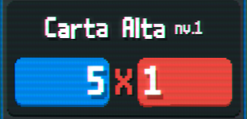As apostas definem quanto você deve pontuar para ir para a proxima. Na terceira aposta sempre será o Boss que define uma desvantagem seja dar desvantagem para algum naipe ou tipo de carta entre outras.
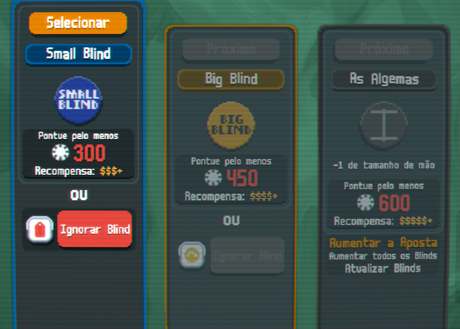Para pontuar você joga mãos de poker que dão fichas e multiplicadores diferentes. Você pode jogar até 5 cartas ou descartar até 5 cartas para encontrar cartas que busca. Fato importante que você sempre vai ter uma quantidade limitada de mãos e descartes por Blind.
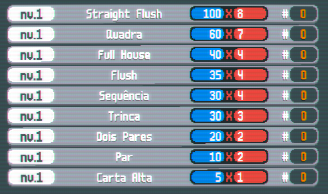 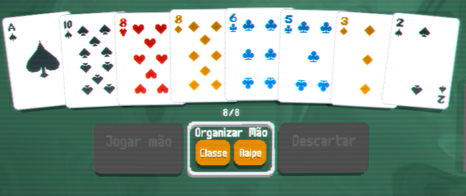 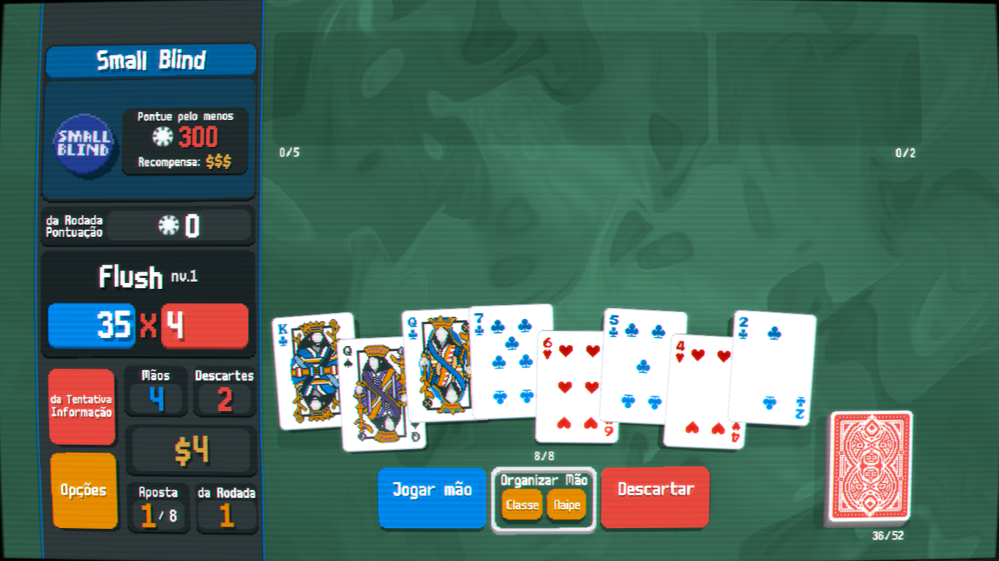 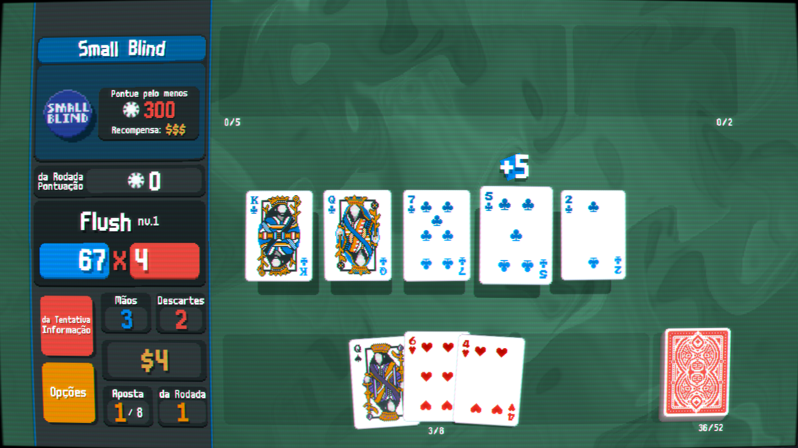Lembrar que cada carta do seu baralho sem nenhum tipo de modificação, da fichas ao pontuar em uma mão.
Exemplo: a carta 2 dará duas fichas ao pontuar; as cartas 10, Valete, Rainha e Rei dará 10 fichas; e o Ás sempre dará 11 fichas e pode valer como uma carta "1" em sequencia de Ás, 2, 3, 4, 5 ou pode ser usado como "15" em uma sequencia de 10, Valete, Rainha, Rei e Ás.
Depois de ganhar uma aposta sempre irar vir uma loja antes do proximo Blind que pode conter Coringas, Cartas de Tarô, Planetas, Cartas Espectrais, Vouchers e Cartas de jogo.
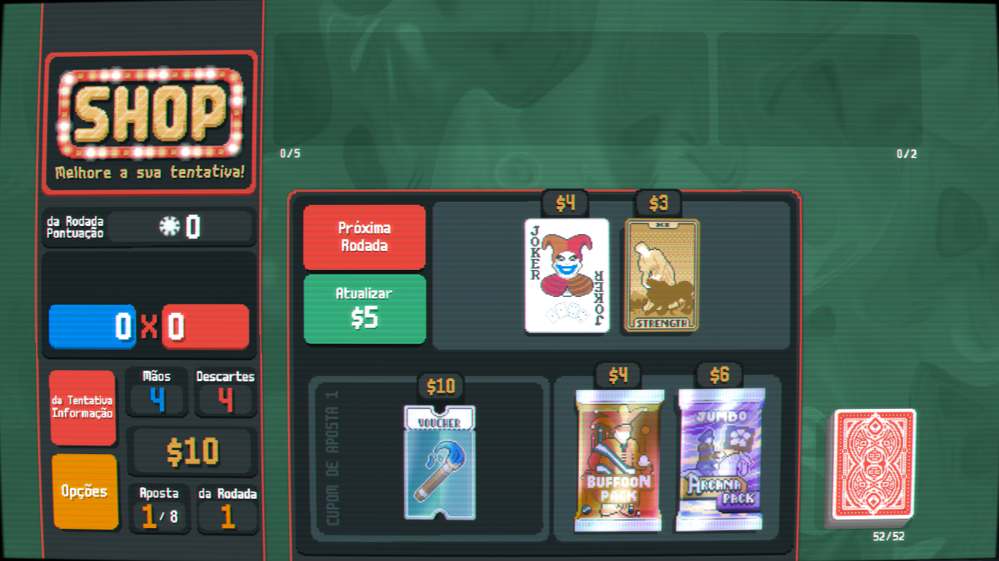Geralmente cada baralho que você pode usar tem espaço para ate 5 coringas que servem para diversas coisas sendo: dar fichas, multiplicador, mulitplicar os multis por 1,5x ou 2x etc. Sem contar outros diversos efeitos unicos que varia de mão ou especificação da propria carta.
Como todas as cartas pode vir pela loja naturalmente ou por pacote de reforço com o tema de Tarô. As cartas de tarô serve em sua maioria alterar as cartas do seu baralho, podendo mudar naipes das cartas, criar copias, criar um coringa, dobrar o dinheiro entre outros atributos.
Podem vir normalmente na loja ou em pacote de reforço de planetas. As cartas de planeta serve para uso exclusivo de subir um nivel de uma mão do poker, fazendo com que aquela mão quando jogada dê mais fichas e multiplicadores.
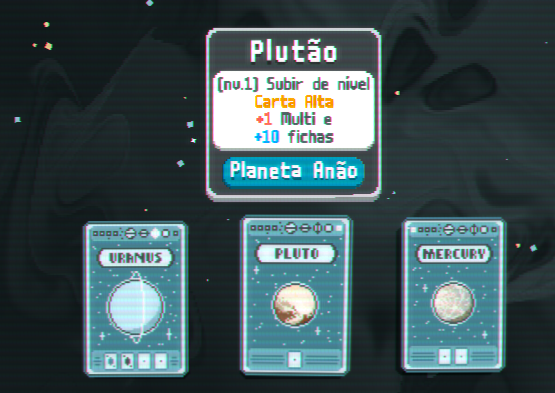Apenas da para pegar com pacotes de reforços ou se estiver usando o baralho das cartas espectrais. São como cartas de tarôs so que com buffs maiores e permite conseguir os Coringas Lendarios se der sorte.
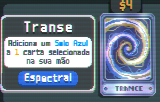 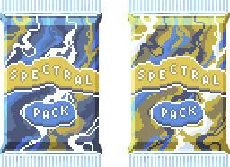
Os cupons são comprados na loja e sempre é algo adicional para te auxiliar na jogatina. Pode aumentar a chance de aparecer pacotes de reforços especificos, aumento de descarte ou mão jogada entre outros fatores.
Bem você pode pegar abrindo pacotes ou transformando cartas. São as cartas do baralho que vc pode adcionar a mais com modificadores ou não, permitindo uma carta da 4 de multi ou da 1,5x de multiplicador caso mantida na mão sem joga-la. É util dependendo doq deseja fazer talvez uma build de Ás?
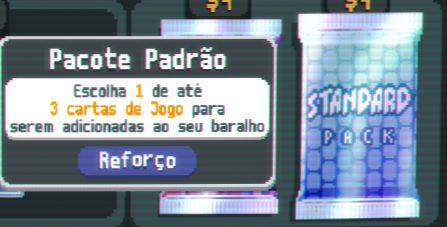 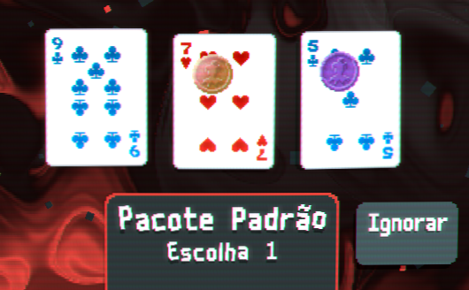